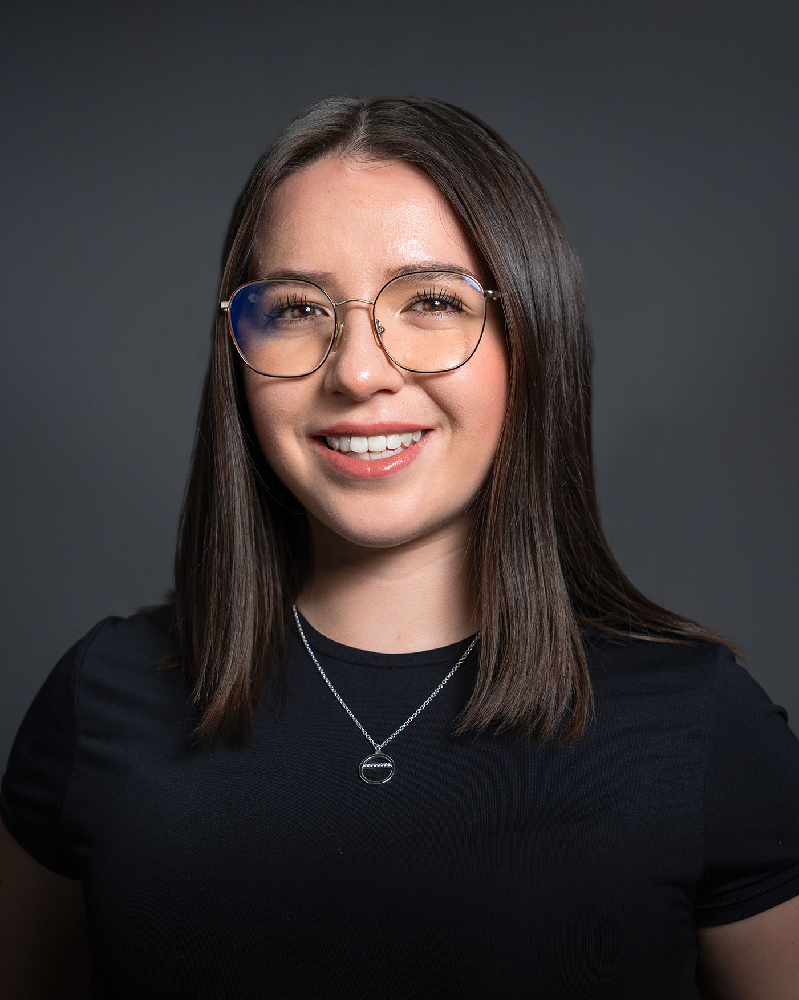
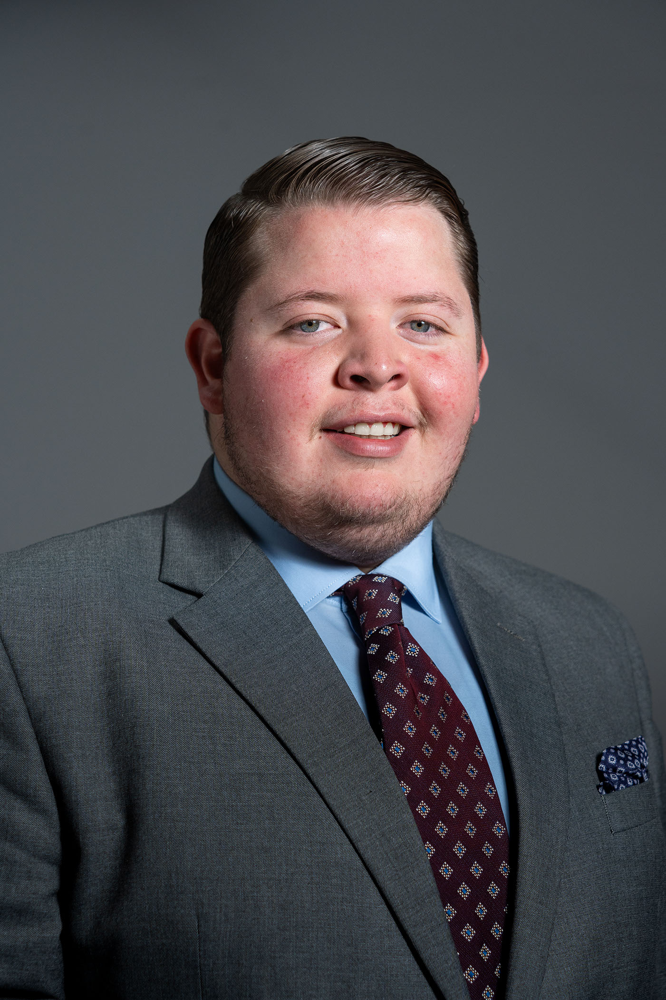
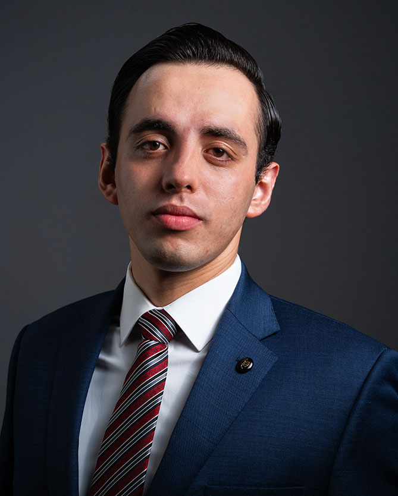

ANTE es un estudio de retrato minimalista, el cual nace del gusto por mirar a las personas con atención y traducir esa mirada en una imagen honesta que refleje el carácter único de cada persona. Cada sesión sirve como un espacio para reencontrarse con uno mismo y estar orgulloso de quien se es.
Lo importante aquí
Se celebra lo que hace único a cada quien —las diferencias sutiles y las evidentes—. El estudio trabaja con una estética limpia y un ritmo tranquilo para que la experiencia sea cómoda y eficiente. Un solo fin: que cada persona se reconozca y se afirme.
CalidadHonestidadEmpatíaRespeto a la individualidadHumanidad
Testimonios

“La sesión fue sencilla y tranquila. La foto final me representa: limpia, directa y humana.”

“Se nota el buen gusto en la luz y en la dirección. El resultado es justo lo que necesitaba.”
“Llegué nervioso y terminé disfrutando la sesión. La dirección fue precisa y el resultado se siente auténtico.”

“Necesitaba una foto formal pero moderna. En minutos obtuvimos imágenes que uso en todos mis perfiles.”
Qué se hace
Retrato profesional para perfiles y equipos; retrato personal y editorial. La invitación es para ejecutivos, artistas y cualquier persona que quiera una foto que la represente y perdure. La propuesta: luz cuidada, dirección suave y un resultado excepcional.
De dónde surge
ANTE nace en oposición a la prisa y al exceso. En un mundo de imágenes saturadas, el estudio elige la pausa, la luz precisa y el encuadre esencial para retratos honestos, elegantes y perdurables.